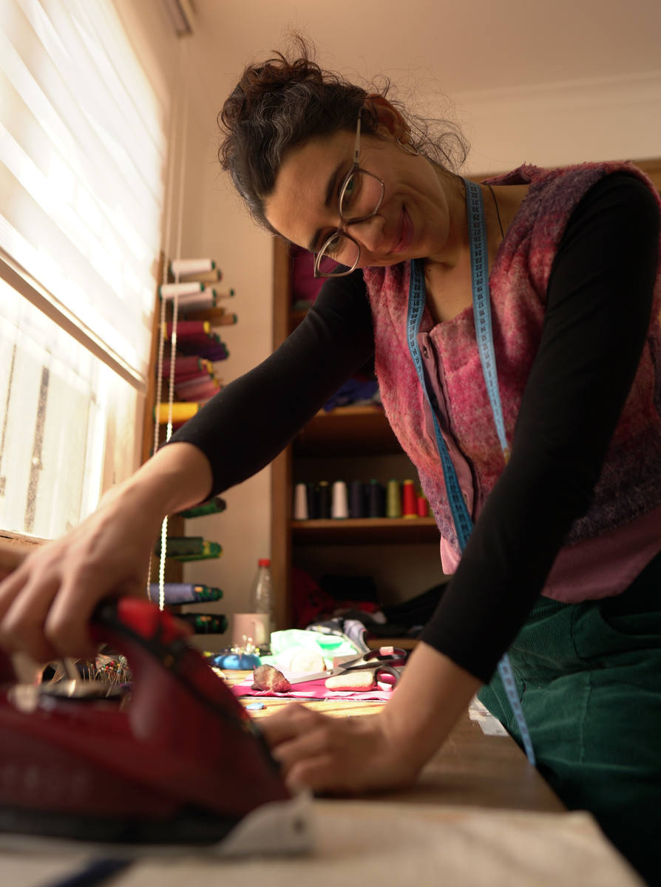

Hola!
Soy Daniela
Mi nombre es Daniela, soy diseñadora gráfica (UDP) y arte terapeuta (U de Chile) dedicada al diseño de vestuario desde 2012.
Soy una recicladora y me encanta trabajar con reciclaje textil, darle una nueva vida a prendas en desuso y contribuir a disminuir la contaminación ambiental textil.
Tengo un taller desde entonces en donde imparto clases de costura, moldaje, corte y confección. Hacemos vestuario a medida y accesorios, puntadas básicas y trajes de alta costura, arreglos y mucho más.
Algo sobre mi experiencia
- 2012Creé mi marca Negra Mora Diseños
- 2021Curso de costura básica en la Junta de Vecinos de Polpaico, Tiltil.
- 2023Taller de diseño, reciclaje textil y accesorios en Balmaceda Arte Joven, Santiago, Chile.
- 2025Charla y taller de Upcycling en Duoc UC.
- 2025Curso de Costura Básica en Laboratorio Ciudadano, Independencia, Santiago, Chile.
- 2025–2026Imparto clases de Corte y confección en la Corporación Cultural de La Reina, Vicente Bianchi.